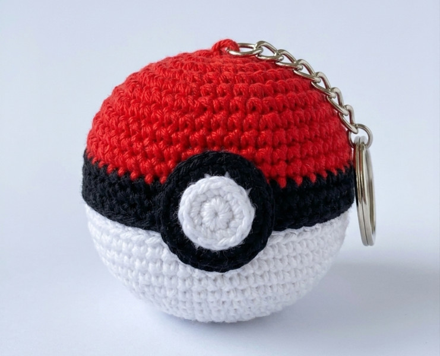

Pokémon Chaveiro de Crochê Amigurumi Receita Grátis
Crédito: katja.leander

Materiais
- Fios de algodão nas cores: Vermelho, Preto e Branco
- Agulha de acordo com seu fio de preferência
- Fibra siliconada para enchimento
- Argola para chaveiro
Pokebola
- Vermelho:
- Carr 1. 6 pb em anel mágico (6)
- Carr 2. aum (12)
- Carr 3. 1pb, aum (18)
- Carr 4. 2pb, aum (24)
- Carr 5-6. 1pb (24)
- Preto:
- Carr 7. pbx (24)
- Carr 8. 1 pb no pbx da 7ª rodada (24)
- Branco:
- Carr 9. pbx (24)
- Carr 10. 1 pb no pbx da 9ª rodada (24)
- Carr 11. 1pb (24)
- Carr 12. 2pb, dim (18)
- Carr 13. 1pb, dim (12)
- Preencher com a fibra siliconada.
- Carr 14. dim (6)
- Arrematar.
Botão Central
- Branco:
- Carr 1. 6 pb em anel mágico
- Carr 2. aum (12)
- Preto:
- Carr 3. 1pb, aum (18)
- Arrematar.
- Finalização: Costure ou cole o botão no centro da pokebola sobre a faixa preta. Seu chaveiro de crochê pokebola está pronto!